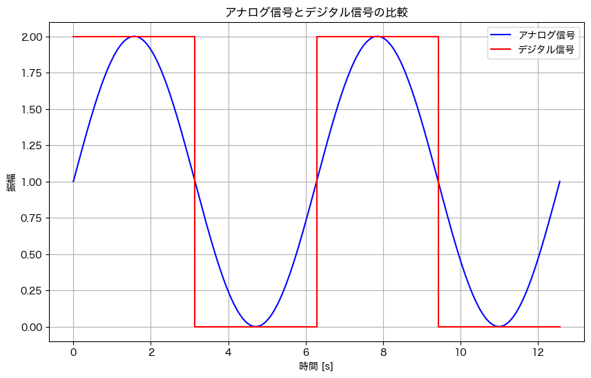
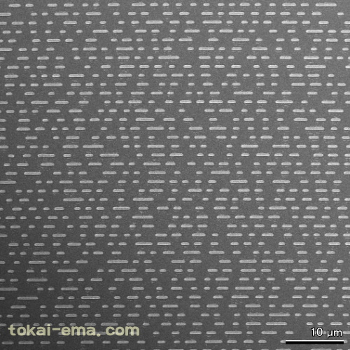

1. アナログとデジタル，数値表現#
到達目標
論理演算の基本となるアナログとデジタル，２進数表現，補数表現を理解する．
1.1. アナログとデジタル#
アナログ：連続的に変化する物理量
デジタル：離散的な数値や符号
Tip
アナログの例：身長や体重，工事現場の騒音の大きさ，アナログ時計が示す時刻
デジタルの例：テレビの音量調整，デジタル時計が示す時刻
アナログ信号：振幅が時間に関して連続に変化する信号
デジタル信号：振幅が時間に関して離散的な値のみをとる信号
信号\(f: t \mapsto f(t)\)が連続かそうでないかで，アナログ信号かデジタル信号かが分類される．
Tip
アナログ信号をデジタル信号に変換する方法

青のアナログ信号をデジタル信号に変換するには，例えば1[V]（ボルト）より大きな電圧は最大値の2[V]に，それより小さな電圧は0[V]として変換する． つまり次の関数を施す．
ここで2[V]を”1”，0[V]を”0”と解釈することでデジタル信号と解釈することができる． このとき，”1”と”0”を切り替える値1[V]を閾値と呼ぶ．
アナログ回路：アナログ信号を扱う．
利点：伝わる情報量が多い．
欠点：ノイズの混入によって信号の形が変化してしまう．
デジタル回路：ある閾値より大きな電圧を”1”，小さな電圧を”0”として，”0”と”1”からなるデジタル信号を扱う．
利点：微小なノイズの影響を受けない．
欠点：伝えられる情報量が減る．
ノイズの影響を受けにくいという利点によって，安定した回路の動作を実現できるようになる． また，情報を”0”と”1”で表現したことにより論理演算によって処理できるようになる．
Tip
レコードとCDの違い
レコードは音の振動をそのまま円盤に伝えて記録する．これを再生すると元の音の振動が再現されるため，音質が良いとされる．
CDは音の振動をデジタル信号に変換して記録する．これを再生するとデジタル信号で復元されるため，元の音よりも音質が下がる．音質を良くするには記録データの信号線を増やす必要がある．

参考：「CDを電子顕微鏡で見てみよう」https://www.tokai-ema.com/cd.html
1.2. 2進数表現#
10進数 (decimal number)：0〜9の数字を用いて表現される整数．
0〜9の数字で表しきれないときに桁上がりが発生する．
ある整数\(N\)が10進数で表されていることを\((N)_{10}\)のように表す．
このとき\(10\)を基数と呼ぶ．
日常生活で頻繁に使用される．
例えば\((12.34)_{10} = 1 \times 10^1 + 2 \times 10^0 + 3 \times 10^{-1} + 4 \times 10^{-2}\)である．
2進数 (binary number)：0, 1の2種の数字を用いて表現される整数．
コンピュータで使用される．
電圧が高ければ1，低ければ0として，電圧の高低によって処理を実現できる．
例えば\((10.1)_{2} = 1 \times 2^1 + 0 \times 2^0 + 1 \times 2^{-1}\)であるから，10進数で表示すると\((10.1)_{2} = (2.5)_{10}\)となる．
2進数の1桁をビット（binary digit, bit）と呼ぶ．
例えば\((1010)_{2}\)のビット数は4ビットである．
コンピュータが扱うデータの最小単位が1ビットであり，このビット数がデータの大きさを表す．
1文字を表すデータ量を8ビットとして，これを1単位にしたものをバイト（Byte）と呼ぶ．
1バイトは\(2^8=256\)種類の文字を指定することができる．
16進数 (hexa decimal number)：0〜9，A〜Fの記号を用いて表現される整数．
A〜Eの記号は10進数では\((\mathrm{A})_{16}=(10)_{10}\)，\((\mathrm{B})_{16}=(11)_{10}\)，\((\mathrm{C})_{16}=(12)_{10}\)，\((\mathrm{D})_{16}=(13)_{10}\)，\((\mathrm{E})_{16}=(14)_{10}\)，\((\mathrm{F})_{16}=(15)_{10}\)となる．
IPv6アドレス，カラーコードなどで使用される．
2進数表示された数をコンパクトに記述するためにも使用される．
n進数：n種の記号を用いて表現される整数．
n種の記号で表しきれないときに桁上がりが発生する．
このとき\(n\)を基数と呼ぶ．
Tip
ある自然数Nをn進数で表すと何桁になるかを判定する方法
\(\log_{n}{N}\)より大きい自然数の最小値がn進数で表した場合の桁数になる．
1.2.1. 2進数の計算#
0と1の組み合わせだけなので，次の4通りで基本的な加算のパターンは網羅される．
計算式 |
値 |
|---|---|
\(0+0\) |
0 |
\(0+1\) |
1 |
\(1+0\) |
1 |
\(1+1\) |
10 |
1.2.2. 基数変換#
基数変換：ある進数を他の進数に変換する手続き．
n進数表示で整数部\(k\)桁，小数部\(l\)桁の数\(N\)が，各桁の数字の表示で\(d_{m-1} \cdots d_0.d_{-1} d_{-2} \cdots d_{k}\)と表されているとき，この数\(N\)は
と分解できることから，これをm進数表示するには，
のようにm進数表示に書き換えれば良い．
1.3. 負の数の表現#
負の数を扱う方法には次のものがある．
符号付き絶対値表現
補数表現
1.3.1. 符号付き絶対値表現#
正か負かを表現するには”0”か”1”かで区別すれば十分である． そこで頭の1ビットを符号を表す部分と解釈することで負の数も含めた表現が可能になる． このとき，先頭の1ビットを符号ビットと呼ぶ．
1.3.2. 補数表現#
補数：ある数値が桁上がりをするために必要な最小の数，またはその値から1を引いた数．
コンピュータで計算できるデータサイズは有限であるから，数値を表現するために使用できるビット数には制限がある． この制限桁数を超えた桁上がりが生じると，値は0に戻る． 例えば2進数で8桁までしか表現できない場合，\((256)_{10}=(2^8)_{10}=(100000000)_{2}\) は\(2^8\)の桁がないために\(00000000\)の表示になってしまう． この性質を利用して，負の数を補数を用いて表現することができる．
つまり桁数に制限がないとき，ある数\(N\)に補数\(N^{\prime}\)を足すと
となるが，\(p\)桁までしか表せなければ見かけ上は
となる．これは\(N^{\prime}=-N\)と解釈できる． この性質を利用して\(N\)の負の数\(-N\)を\(N^{\prime}\)を用いて表すことができる．
1.4. まとめ#
1.4.1. 復習#
次の計算結果を2進数で答えよ．
\((101)_2+(11)_2\)
\((1.011)_2+(0.11)_2\)
\((\mathrm{A})_{16}+(\mathrm{C})_{16}\)
次の数を2進数に基数変換せよ．
\((9)_{10}\)
\((54)_{10}\)
\((\mathrm{F})_{16}\)
\((1\mathrm{A})_{16}\)
次の数を10進数に基数変換せよ．
\((1111)_{2}\)
\((2\mathrm{C})_{16}\)
\((10)_{16}\)
2進数で4桁までしか表せないものとする．このとき\((101)_{2} - (11)_{2}\)を\((11)_{2}\)の補数を用いた足し算で計算せよ．
本日学んだことを3つ箇条書きで挙げよ．
1.4.2. 予習#
次回の講義資料を確認する．